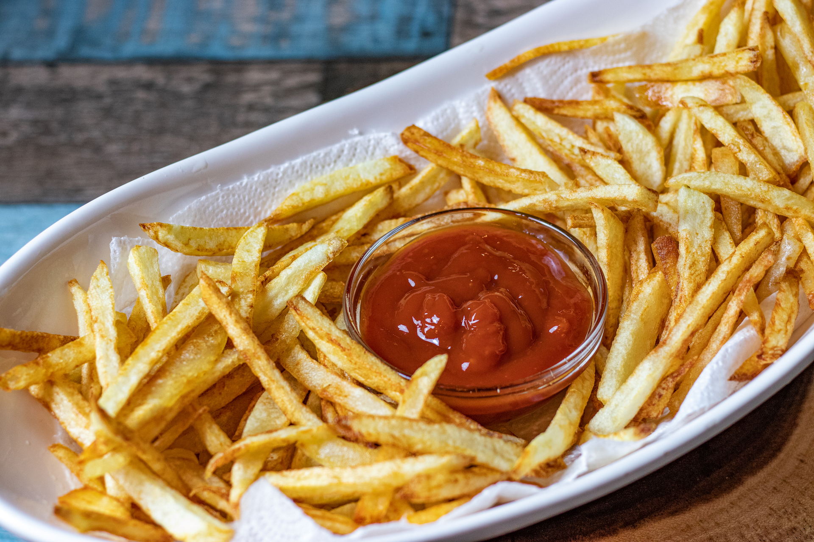

Recipe 1: MIX VEGETABLE SANDWICH
Ingredients
- 3 bread- brown
- 1/2 medium tomato
- 1/2 medium onion
- salt as required
- 1/2 medium cucumber
- 1 and 1/2 slices cheese slices
- 1/2 medium carrot
- 1/4 teaspoon spice black pepper
- 1 teaspoon butter
Instructions
- Step 1:
Take chopped mixed vegetables in a bowl and add in salt & pepper.
- Step 2:
Toss and assemble by placing a cheese slice on a bread slice and spreading 2-3 table spoons of mixed vegetables on it and covering it with another bread slice.
- Step 3:
Add little butter to a pan and toast the sandwich until it turns crisp on both the sides. Serve warm.
Recipe 2: PIZZA

Ingredients
- 2 cup all purpose flour
- 100 ml tomato ketchup
- 1 tomato
- 1 teaspoon chilli flakes
- 1 teaspoon baking powder
- 1 teaspoon sugar
- 2 teaspoon virgin olive oil
- 100 gm processed cheese
- 4 mushroom
- 1/2 capsicum (green pepper)
- 1 teaspoon oregano
- 1/2 cup mozzarella
- 1 tablespoon dry yeast
- water as required
Instructions
- Step 1 : Prepare the pizza dough
Take a dough kneading plate and add all-purpose flour to it. Next, add salt and baking powder in it and sieve the flour once. Then, make a well in the centre and add 2 teaspoon of olive oil to it. On the other hand, take a little warm water and mix the yeast in it along with 1 teaspoon of sugar. Mix well and keep aside for 10-15 minutes. The yeast will rise in the meantime. Once the yeast has risen, add it to the flour knead the dough nicely using some water. Keep this dough aside for 4-6 hours. Then knead the dough once again. Now, the pizza dough is ready.
- Step 2 : Prepare the pizza base
Preheat the oven at 180 degree Celsius. Now, is the time to make the pizza base when the dough is ready. Dust the space a little using dry flour and take a large amount of the pizza dough. Using a rolling pin, roll this dough into a nice circular base. (Note: Make sure that the circular base is even at all ends.) Once you have made the base, use a fork and prick the base with it so that the base doesn't rise and gets baked nicely. Put it into the preheated oven and bake it 10 minutes. Now, your pizza base is ready.
- Step 3 : Chop all the vegetables for the pizza
Now, wash the capsicum and slice it thinly in a bowl. Then, peel the onions and cut thin slices of it as well in another bowl. And finally, cut tomatoes and mushrooms in the same manner. However, make sure that those tomatoes have less juice in them. Once all the veggies are done, Now, grate the processed and mozzarella cheese in separate bowls.
- Step 4 : Spread the sauce and veggies on the base
Then, take the fresh pizza base and apply tomato ketchup all over. Spread half the processed cheese all over the base and evenly put the veggies all across the base. Once you have put all the veggies, put a thick layer of mozzarella cheese.
- Step 5 : Bake the pizza at 250 degree Celsius for 10 minutes
Put this pizza base in a baking tray and place it inside the oven. Let the pizza bake 10 minutes at 250 degree Celsius. Once done, take out the baking tray and slice the pizza. Sprinkle oregano and chilli flakes as per your taste and serve hot. (Note: Make sure that the oven is preheated at 250 degree Celsius for 5 minutes at least.)
Recipe 3: FRENCH FRIES

Ingredients
- 500 gm potato
- salt as required
- 2 cup refined oil
- 3 pinches black pepper
Instructions
- Step 1 : Chop the potatoes first
To prepare this easy recipe, you need to make sure that they are cut in the right shape and size. They should neither be too thick, nor too thin and should be cut clean and sharp. The trick is to first slice the potatoes and then cut them lengthwise. You can also use a fries cutter for that long, even shape.
- Step 2 : Soak cut potatoes in ice-cold water for 10-15 minutes
Now, wash the potatoes under running water till they are squeaky clean. Place them in a bowl of iced water for 10 to 15 minutes. Keep them submerged in water or they will turn black.
- Step 3 : Deep fry the potato fries
Now, heat the oil in a deep bottomed pan. Once the smoke starts appearing, reduce the flame and allow it to acquire a lower temperature. Now, deep fry the potatoes in batches. Keep the flame low. This will make them crunchy and also help retain their colour.
- Step 4 : Sprinkle salt and pepper and serve hot
Drain excess oil and place them on an absorbent paper. Allow them to cool. Now sprinkle salt and pepper and toss well. Serve immediately with ketchup. They can also be served with burgers and cutlets.